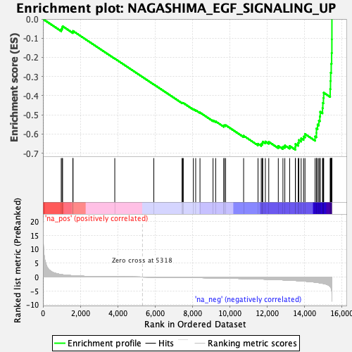
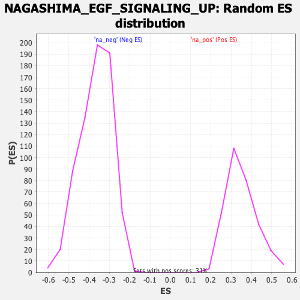

| | | Dataset | DE_genes |
| Phenotype | NoPhenotypeAvailable |
| Upregulated in class | na_neg |
| GeneSet | NAGASHIMA_EGF_SIGNALING_UP |
| Enrichment Score (ES) | -0.6821698 |
| Normalized Enrichment Score (NES) | -1.8553504 |
| Nominal p-value | 0.0 |
| FDR q-value | 0.0034643686 |
| FWER p-Value | 0.018 |
Table: GSEA Results Summary

Fig 1: Enrichment plot: NAGASHIMA_EGF_SIGNALING_UP
Profile of the Running ES Score & Positions of GeneSet Members on the Rank Ordered List
| PROBE | GENE SYMBOL | GENE_TITLE | RANK IN GENE LIST | RANK METRIC SCORE | RUNNING ES | CORE ENRICHMENT | | 1 | KDM6B | | | 979 | 0.885 | -0.0528 | No |
| 2 | TNFRSF11B | | | 1024 | 0.824 | -0.0456 | No |
| 3 | F2RL1 | | | 1052 | 0.800 | -0.0377 | No |
| 4 | RYBP | | | 1602 | 0.471 | -0.0676 | No |
| 5 | DUSP2 | | | 1611 | 0.469 | -0.0624 | No |
| 6 | EDN1 | | | 3846 | 0.079 | -0.2063 | No |
| 7 | ZFP36 | | | 5936 | -0.035 | -0.3414 | No |
| 8 | TIPARP | | | 7448 | -0.148 | -0.4376 | No |
| 9 | NAP1L1 | | | 7475 | -0.150 | -0.4375 | No |
| 10 | EGR4 | | | 7514 | -0.153 | -0.4381 | No |
| 11 | EGR3 | | | 8052 | -0.204 | -0.4704 | No |
| 12 | SPRED2 | | | 8178 | -0.216 | -0.4759 | No |
| 13 | NR4A3 | | | 8408 | -0.240 | -0.4878 | No |
| 14 | DNAJB1 | | | 9107 | -0.323 | -0.5292 | No |
| 15 | DUSP5 | | | 9248 | -0.341 | -0.5341 | No |
| 16 | MCL1 | | | 9684 | -0.402 | -0.5575 | No |
| 17 | TNFRSF12A | | | 9708 | -0.406 | -0.5540 | No |
| 18 | BCL10 | | | 9781 | -0.414 | -0.5537 | No |
| 19 | ETS2 | | | 10744 | -0.559 | -0.6093 | No |
| 20 | KBTBD2 | | | 11515 | -0.702 | -0.6507 | No |
| 21 | HBEGF | | | 11688 | -0.740 | -0.6529 | No |
| 22 | NR4A2 | | | 11743 | -0.749 | -0.6473 | No |
| 23 | AREG | | | 11769 | -0.755 | -0.6398 | No |
| 24 | ATF3 | | | 11908 | -0.787 | -0.6392 | No |
| 25 | KLF6 | | | 12090 | -0.825 | -0.6409 | No |
| 26 | NEDD9 | | | 12600 | -0.953 | -0.6624 | No |
| 27 | TRIB1 | | | 12849 | -1.028 | -0.6660 | No |
| 28 | ID1 | | | 12950 | -1.061 | -0.6596 | No |
| 29 | LIF | | | 13208 | -1.142 | -0.6624 | No |
| 30 | MIR22HG | | | 13514 | -1.258 | -0.6669 | Yes |
| 31 | FOSL1 | | | 13518 | -1.260 | -0.6518 | Yes |
| 32 | SIK1 | | | 13666 | -1.317 | -0.6454 | Yes |
| 33 | HES1 | | | 13702 | -1.332 | -0.6315 | Yes |
| 34 | SOWAHC | | | 13824 | -1.389 | -0.6225 | Yes |
| 35 | BHLHE40 | | | 13955 | -1.446 | -0.6134 | Yes |
| 36 | JUNB | | | 14030 | -1.485 | -0.6001 | Yes |
| 37 | EPHA2 | | | 14571 | -1.846 | -0.6128 | Yes |
| 38 | ARC | | | 14641 | -1.912 | -0.5940 | Yes |
| 39 | PLEKHO2 | | | 14643 | -1.913 | -0.5709 | Yes |
| 40 | GEM | | | 14702 | -1.971 | -0.5507 | Yes |
| 41 | ID3 | | | 14771 | -2.037 | -0.5304 | Yes |
| 42 | IER3 | | | 14825 | -2.088 | -0.5085 | Yes |
| 43 | KLF10 | | | 14843 | -2.100 | -0.4842 | Yes |
| 44 | DUSP1 | | | 14967 | -2.266 | -0.4646 | Yes |
| 45 | MYC | | | 14984 | -2.284 | -0.4380 | Yes |
| 46 | AEN | | | 15017 | -2.329 | -0.4118 | Yes |
| 47 | NAB2 | | | 15031 | -2.342 | -0.3842 | Yes |
| 48 | MAFF | | | 15377 | -3.396 | -0.3654 | Yes |
| 49 | NR4A1 | | | 15395 | -3.552 | -0.3234 | Yes |
| 50 | IER2 | | | 15405 | -3.617 | -0.2801 | Yes |
| 51 | EGR1 | | | 15434 | -4.010 | -0.2333 | Yes |
| 52 | JUN | | | 15456 | -4.705 | -0.1775 | Yes |
| 53 | FOSB | | | 15469 | -5.930 | -0.1064 | Yes |
| 54 | FOS | | | 15471 | -8.771 | -0.0000 | Yes |
Table: GSEA details [plain text format]

Fig 2: NAGASHIMA_EGF_SIGNALING_UP: Random ES distribution
Gene set null distribution of ES for NAGASHIMA_EGF_SIGNALING_UP